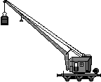
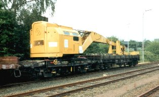

Krümelbahn
Krümelbahn
(Bekohlungs-)Kran Kranwagen115
Kranwagen115
Kranwagen115 (80 80 974 0 085-3) in Solingen-Hauptbahnhof [20-8-90]

Allgemeine Informationen
Eine umfangreiche Beschreibung ist im Eisenbahn-Kurier 2/91 (Seite 90 bis 95) erschienen:- Regelspurkräne mit Hochausleger

;){kind=link}
Literaturhinweise
Berichte - Vorbild und/oder Modell - sind erschienen in:- MIBA - Miniaturbahnen 10/97, Seite 33 bis 54
- Eisenbahn-Magazin 12/98, Seite 35 bis 39
- Eisenbahn-Magazin 2/99 Seite 32 bis 39
- Eisenbahn-Magazin 5/12, Seite 6 bis 15
- Eisenbahn-Magazin 8/19, Seite 66 bis 75
- ALBA-Modellbahnpraxis Spezial: Bahnbetriebswerke auf der Modellbahn
- Eisenbahn-Kurier Spezial 19: Bahnbetriebswerke (I)
Industriemodelle/Bausätze
| Hersteller | Epoche | H0 | TT | N | Bemerkungen |
|---|---|---|---|---|---|
| Weinert | III | 3391 (B) 3390 (B) |
RP25-Räder NEM-Räder |
||
| III | 33901 (B) | Blechausleger "solo" für den Kohlenkran | |||
| Krüger-Modellbau | III | HO 74255 (B) | Kranschutzwagen |
Baubeschreibung

Kranwagen 6804
in Betrieb seit: 04.1991
Eine umfangreiche Beschreibung ist im Eisenbahn-Kurier 2/91 (Seite 90 bis 95) erschienen:
- Regelspurkräne mit Hochausleger
Der 75t-Kran

in Betrieb seit: 03.2003
| Hersteller | Epoche | H0 | TT | N | Bemerkungen | ||||||||||||||||||||||||
|---|---|---|---|---|---|---|---|---|---|---|---|---|---|---|---|---|---|---|---|---|---|---|---|---|---|---|---|---|---|
| Weinert | III | 4179 (B) 4178 (B) |
RP25-Räder NEM-Räder |
||||||||||||||||||||||||||
| 4181 (B) 4178 (B) |
Gegengewichtswagen RP25-Räder NEM-Räder |
||||||||||||||||||||||||||||
| 91131 | Beschriftung für Kranschutzwagen und Vorratstender | ||||||||||||||||||||||||||||
| Fleischmann | III | 5595 (F) | 8595 (F) | ||||||||||||||||||||||||||
| 5596 (F) | 8596 (F) | Gegengewichtswagen | |||||||||||||||||||||||||||
| 5202 (F) | 8957 (F) | Kranschutzwagen | |||||||||||||||||||||||||||
| 5201 (F) | 8598 (F) | Kranausleger-Stützwagen | |||||||||||||||||||||||||||
| 5597 (F) | 8599 (F) | Komplettset (Kran, Gegengewichtswagen, Schutzwagen, Stützwagen) | |||||||||||||||||||||||||||
| 8594 (F) | 3achsiger Mannschaftswagen | ||||||||||||||||||||||||||||
| 5351 (F) 5021 (F) |
8591 (F) | Gerätewagen | |||||||||||||||||||||||||||
| 835683 (F) | 4achsiger Mannschaftswagen Hilfszug Hannover | ||||||||||||||||||||||||||||
| 835684 (F) | 4achsiger Gerätewagen Hilfszug Hannover | ||||||||||||||||||||||||||||
| Gassner | III | G 347 | Beschriftungssatz "G 347 Kranwagenzug"
|
||||||||||||||||||||||||||
| Krüger-Modellbau | III | HO 73160.01 (B) | Kranbelastungswagen "Stuttgart 6553" | ||||||||||||||||||||||||||
| Andreas Nothaft | III | 8236 | Komplettbeschriftung für einen Kohle- und Wasserwagen zu Kranzug 6700, DB | ||||||||||||||||||||||||||
| IV | 7847 | Komplettbeschriftung Kranwagen und Kranzug-Beiwagen, DB | |||||||||||||||||||||||||||
| 8136 | Komplettbeschriftung Kranwagen 100, Fulda+Gegengewichtswagen, DB |
Beschreibungen über den 75t-Kran sind erschienen in:
- Eisenbahn-Kurier 10/99 (Seite 119 bis 123): Der 75-Tonnen Dampfkran
- Miba 10/99 (Seite 20 und 21): Tragende Rolle - Der 75-t-Kranwagen der DRG
- Miba 10/99 (Seite 22 bis 24): Hängt ihn höher - Bausatz des 75-t-Krans in H0 von Weinert
- Eisenbahn-Magazin 12/99 (Seite 114 und 115): Kraftprotz - Weinerts 75-Tonnen-Dampfkran
- Miba 08/76 (Seite 578 bis 580): Kranzug à la Bw Würzburg
- Miba 04/20 (Seite 24 bis 28): Kohlen und Wasser für den Kranwagen
| Links |
|---|
Bildung eines Kranzuges;){kind=link}

Bildung eines Kranzuges
Zu einem Kranzug gehören - neben dem eigentlichen Kranwagen mit dem Gegengewichtewagen - weitere Wagen:
- 2 Kranschutzwagen (hier eignen sich ein X05 z.B. Fleischmann 5914 und ein R10 z.B. Roco 46484)
- ein umgebauter (Wannen)Tender zur Wasser- und Kohlenversorgung z.B. Liliput 230991
- ein ehemaliger Personenwagen als Mannschaftswagen, z.B. Fleischmann 835683
- ein ehemaliger Personen- oder Gepäckwagen als Gerätewagen, z.B. Fleischmann 835684
(für alle 3 Fahrzeuge gibt es bei Weinert einen gemeinsamen Beschriftungssatz)
(die beiden Fleischmannfahrzeuge sind einem "Hilfszug Hannover" zugeteilt)
Der 57t-Kran
| Hersteller | Epoche | H0 | TT | N | Bemerkungen |
|---|---|---|---|---|---|
| Märklin | III | 49570 (F) | |||
| Trix | III | 23057 (F) | |||
| Andreas Nothaft | III | 6609 | Beschriftung für einen Kohle- und Wasserwagen für 57t Kran, DB |
Beschreibungen über den 57t-Kran sind erschienen in:
- Miba 6/19 (Seiten 22 bis 25): Ardelt verpflichtet: Der 57-t-Kran von Märklin in H0
| Links |
Miba 6/19 (Seiten 16 bis 20): Aufbau West: Die 57-t-Kranwagen der DB |
|---|
Der 150t-Kran
| Hersteller | Epoche | H0 | TT | N | Bemerkungen |
|---|---|---|---|---|---|
| Märklin | V | 49950 (F) 49952 (F) |
|||
| 49951 (F) 49953 (F) |
Hilfswagenset | ||||
| Liliput | V | L383811 (F) | Kranbegleitwagen |
Beschreibungen über den 150t-Kran sind erschienen in:
- Miba 3/00 (Seiten 20 bis 23): Die 150t Kranwagen der DB - Goliath und seine Brüder
- Eisenbahn-Kurier 5/00 (Seiten 122 bis 124): Ein Kraftpaket im Maßstab 1:87 - Märklins Goliath
| Links |
|---|
Der Gottwald-Kran GS100.06
| Hersteller | Epoche | H0 | TT | N | Bemerkungen |
|---|---|---|---|---|---|
| Kibri | IV | B-16000 (B) | B-19600 (B) | unmotorisiert | |
| B-16010 (B) | Kranschutzwagen |
Beschreibungen über den Gottwald-Kran sind erschienen in:
- Miba 12/99 (Seite 114f.): Komplettes Allround-Talent - Der Eisenbahnkran Gottwald GS100.06T
- Eisenbahn-Kurier 6/07 (Seite 94f.): Schwerer Brocken im Maßstab 1:160 - Gottwald-Teleskopkran von Kibri
| Links |
|---|